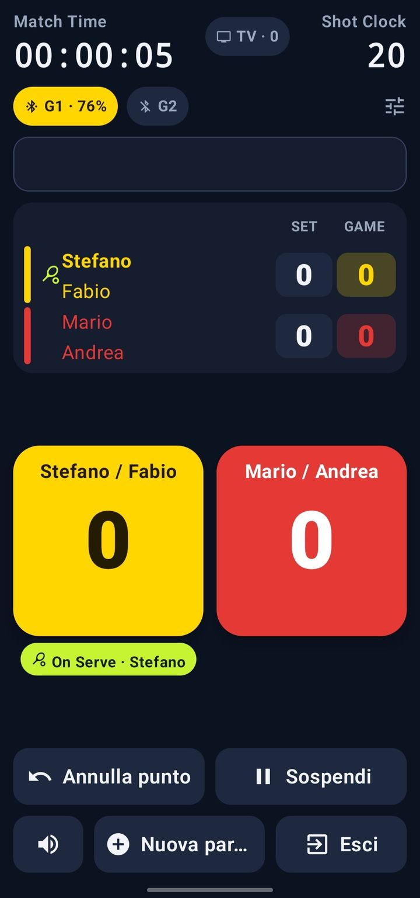
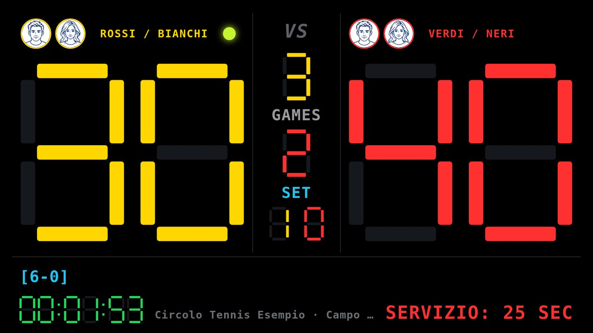
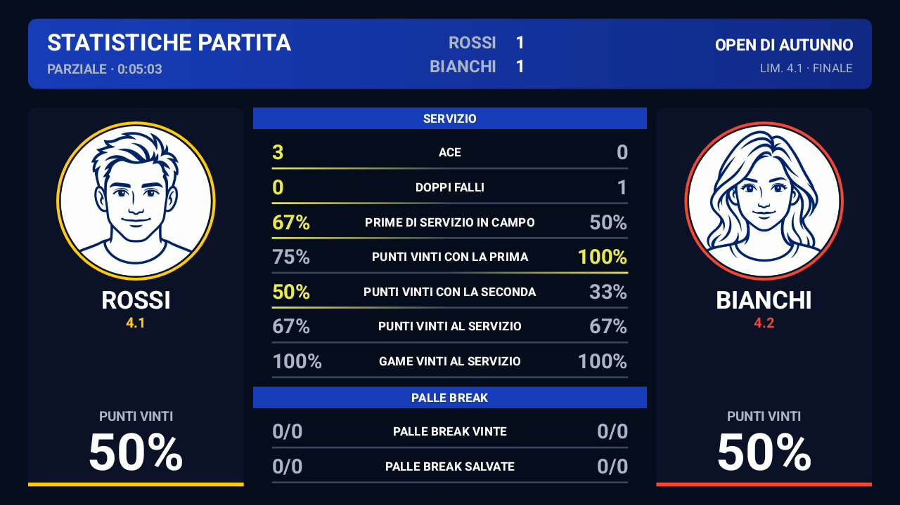
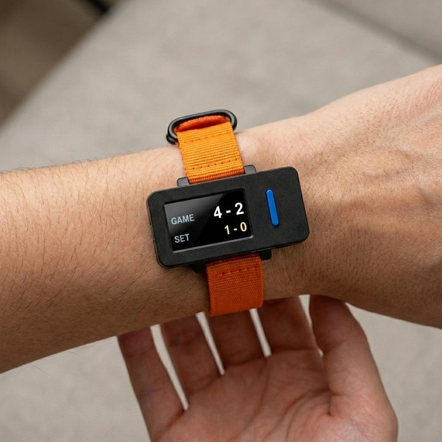
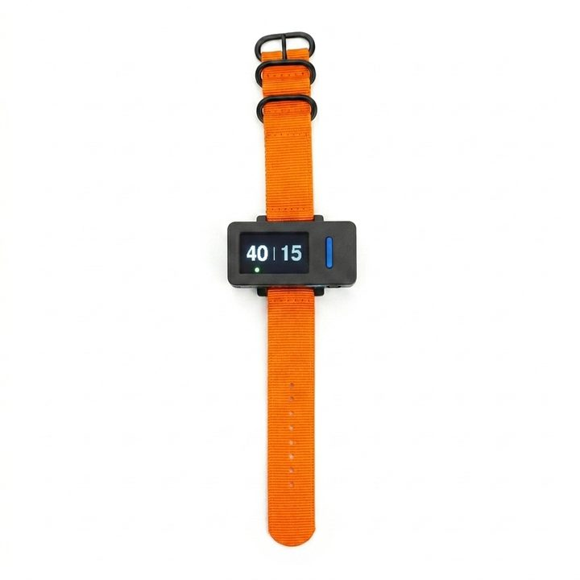

Regras da ITF
Simples e duplas, tie-break, match tie-break de 10, ponto decisivo No-Ad, trocas de lado e ordem de saque sempre certas.
O app Android que marca o placar do tênis e do padel segundo as regras da ITF e o anuncia em voz alta como um árbitro de cadeira. Os pontos são marcados no telefone, com duas pulseiras ou com dois controles Bluetooth; no fim você tem estatísticas, histórico ponto a ponto e, com as pulseiras, também seus golpes, e o resultado pode aparecer ao vivo numa TV. Com uma cinta cardíaca Bluetooth você também mede batimentos e calorias, na partida e no treino.

Feito para partidas de verdade, mesmo sem árbitro: toque em quem ganhou o ponto e o app cuida do resto.
Simples e duplas, tie-break, match tie-break de 10, ponto decisivo No-Ad, trocas de lado e ordem de saque sempre certas.
O telefone anuncia pontos, games, sets e trocas de lado no seu idioma, mesmo offline. Você também pode usar suas próprias gravações.
Um segundo telefone, um tablet ou um computador mostra o placar ao vivo numa TV ou monitor, com cronômetros de jogo e de intervalo.
Com duas M5StickS3 no pulso, cada jogador marca o próprio ponto com um botão, e o telefone pode ficar na bolsa.
No fim da partida você tem o resultado, a duração, os pontos e games vencidos e o local: salve em texto, dados ou imagem na pasta que quiser e compartilhe com qualquer app. As partidas podem ser suspensas e retomadas, mesmo depois de fechar o app.
Italiano, inglês, francês, alemão, espanhol e português: o idioma escolhido vale para as telas, a voz, o placar e as pulseiras.
O padel se conta como o tênis: escolha Padel e o app configura sozinho dupla e golden point. O resumo e o compartilhamento dizem “Padel”. E para as noites no clube há torneios Americano e Mexicano, de 4 a 16 jogadores, com rodadas e classificação automáticas.
No fim da partida, como nos sites de resultados: saque, devolução, break points, pontos seguidos e o histórico ponto a ponto, da partida inteira ou set a set.
No lugar das pulseiras, dois controles Bluetooth de selfie bem baratos: um clique marca o ponto, o clique duplo desfaz. Sem firmware para carregar.
Com uma cinta peitoral Bluetooth (Coospo, Magene, Polar, Garmin…) você vê os batimentos de cada jogador ao vivo e, no fim da partida, média, máximo, calorias, gráfico e zonas cardíacas.
Treine com a cinta mesmo sem partida: voltas, pausas, minuto de recuperação, VFC, CSV e PDF. Progressos compara treinos e partidas ao longo do tempo e diz se você está melhorando.
Cintas e pulseiras alcançam alguns metros a menos que o comprimento da quadra: um segundo telefone no outro fundo faz a ponte, com rede própria e sem perder dados.
Com o firmware 2.4 a pulseira distingue forehand, backhand, saque e voleio de quem a usa, depois de uma breve calibração. No fim você vê os golpes de cada jogador, a velocidade do pulso e quantos golpes dura cada troca de bola.
Um segundo telefone num tripé filma a partida com o placar por cima, também ao vivo. Reveja cada ponto, deixe o app montar os melhores momentos com as estatísticas finais e, num ponto contestado, peça o replay.
No fim, o resumo tem três abas: Resumo, Estatísticas e Ponto a ponto. Tudo vem dos pontos que você marca, então funciona também sem pulseiras.
Aces, duplas faltas, primeiros saques, winners e erros não forçados ou forçados aparecem se você ativar as estatísticas detalhadas; com pulseiras ou controles o app pode perguntar como o ponto terminou.
Qualquer tela vira um placar, sem hardware especial e sem internet.

O app tem um pequeno servidor web. Os dois aparelhos só precisam estar na mesma rede Wi-Fi: basta o hotspot de um dos telefones, sem gastar dados.
O telefone-câmera recebe o placar do árbitro e o coloca no vídeo. No fim, o app tira o melhor dela.

Duas M5StickS3 se conectam ao telefone via Bluetooth LE. Cada jogador aperta KEY1 na própria pulseira quando ganha o ponto (KEY2 desfaz): o app conta, anuncia e atualiza o placar.


Saibro, grama ou quadra dura: cada pulseira mostra o placar do ponto de vista de quem a usa, e a bola verde indica quem saca.
Tema escuro de alto contraste, legível até sob o sol. Toque numa imagem para ampliá-la.
Sem conta, sem anúncios, nenhum dado enviado a servidores externos.
Instale o Tennis Score Manager pelo F‑Droid, a loja de apps livres para Android: as atualizações chegam por lá automaticamente.
Baixe no F‑Droid